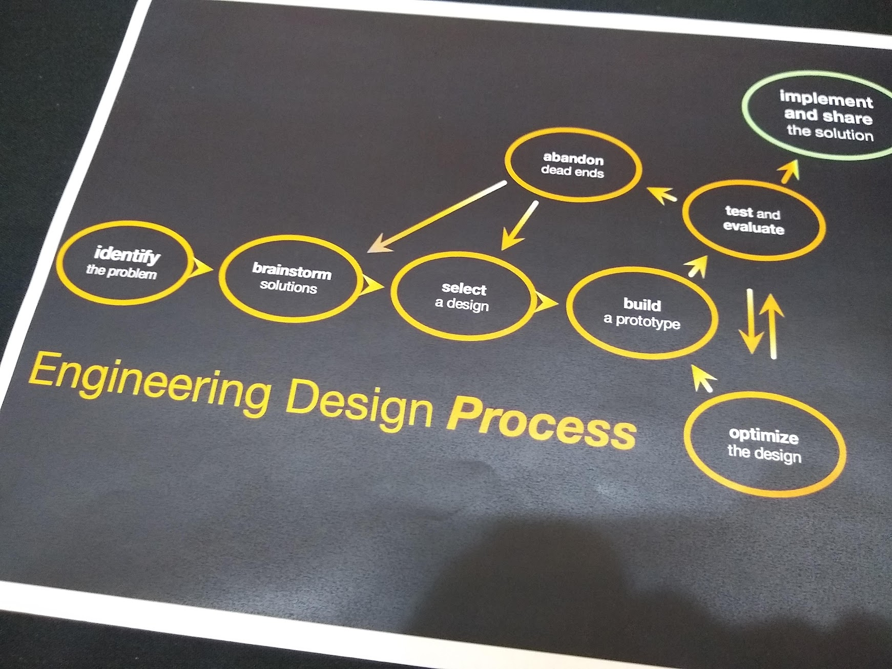
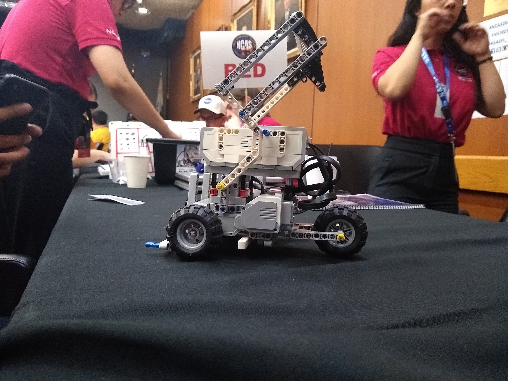
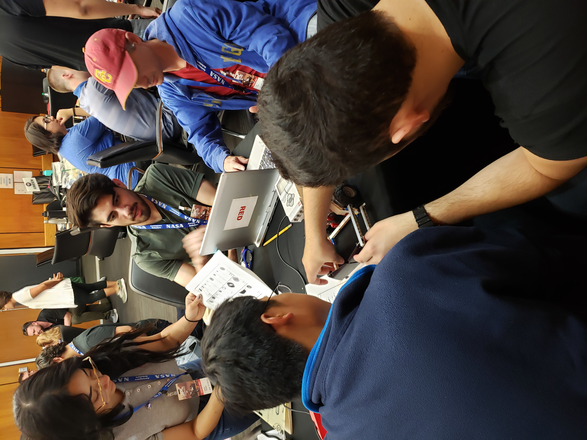
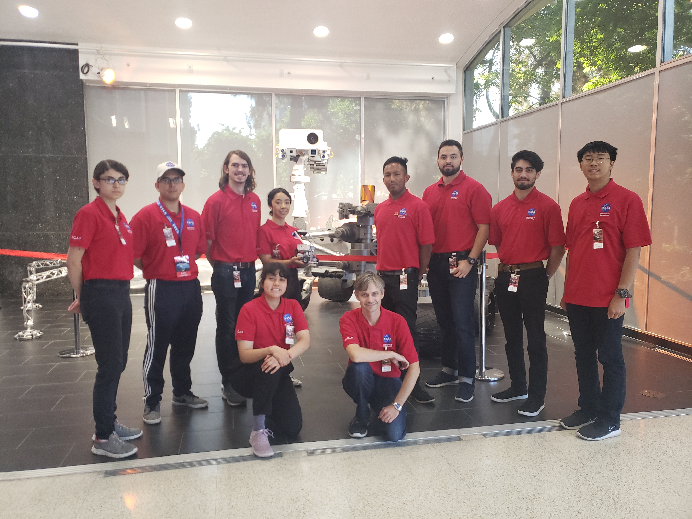
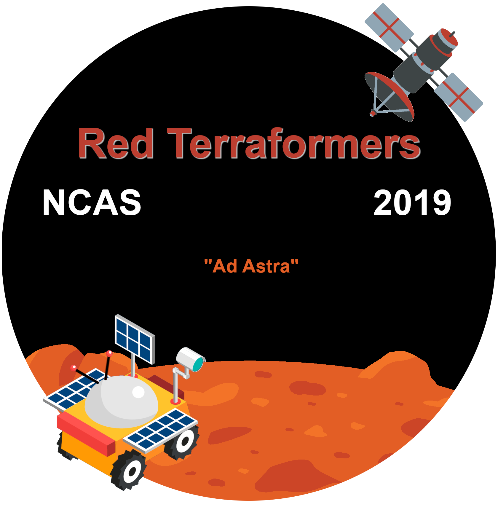

About Me
Education
- Oregon State University - B.S. Computer Science, GPA: 3.84
- Glendale Community College - Computer Science (Transfer), GPA: 4.0
- Los Rios Community College - Computer Science (Transfer), GPA: 4.0
- MTI College - AAS IT Network Administration, GPA: 4.0
- College of the Redwoods - Residential Electrician Program, GPA: 4.0
(Scroll down)

Programming Languages
Certifications
-
Cybersecurity Fundamentals — May 2025
IBM SkillsBuild
Demonstrates foundational understanding of cybersecurity concepts, objectives, and practices. -
Fortinet Certified Fundamentals in Cybersecurity — May 2025
Fortinet, Sunnyvale, California
Validates technical skills and knowledge required for entry-level roles in cybersecurity. -
Information Technology Fundamentals — May 2025
IBM SkillsBuild
Covers IT basics, troubleshooting methodologies, professional tools, and simulated remote support experience. -
Web Development Fundamentals — May 2025
IBM SkillsBuild
Demonstrates understanding of web development concepts, deployment, testing, and use of HTML, CSS, and JavaScript for interactive websites. -
MCITP Certified (70-640, 70-642, 70-646)
Microsoft Certified IT Professional (retired)
Historically validated advanced skills in Windows Server administration, network infrastructure, and enterprise environments.
Additional Experiences
-
NCAS Program & NASA JPL Rover Competition (2020)
- Participated in the National Community College Aerospace Scholars (NCAS) program.
- Collaborated with peers to design and prototype a rover for NASA's JPL competition.
- Developed teamwork, problem-solving, and technical skills while working on an interdisciplinary team.




